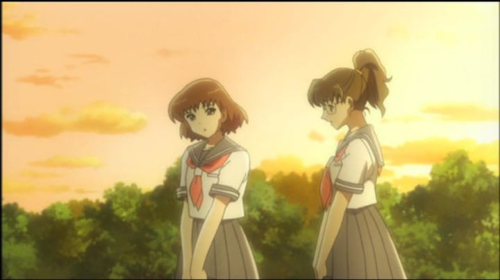

The 2007 anime "Blue Drop" is a lesser-known anime, originally released by Sentai Filmworks without a dub. Shortly after, they did re-release it WITH an English dub, a sign that the series was successful enough to warrant one. I also watched a scene online that peaked my interest, from episode one, where the two main heroines first meet alone in their shared dometory bedroom. I didn't know much else going into this one.... and apparently, the anime didn't know much else about the story either. Set in some alternate future, it shows a young girl named Mari being taken to an all-girls' academy, the first school she'd ever been too (Mari is the only survivor of a mysterious event that killed off her town, and her grandmother, her closest relative, thought it'd be best for her to attend). Initially stubborn and anti-social, her experience doesn't improve when Hagino, the dark-haired, cool, smart and beautiful student, attempt to strangle her in a moment of lost senses. Things eventually settle, and Mari, slowly, gets accustomed to the school, even becoming friends with her co-eds and classmates. Oh, and there's also a subplot about aliens planning a violent invasion. ... that's kind of an important detail, isn't it? Hagino is one of them, a secret agent alien with a British accent (in the dub) covertly hiding among the humans. But she grows fond of the humans, and resists the impending plans of her army. Being a race that apparently doesn't have the male gender, a relationship between Hagino and Mari also begins to blossom. It isn't too explicit, such that a viewer could choose to say they just become "really close friends," but its more than clear enough that they fall in love. THAT relationship, and a climax of the class preparing the perform the annual school play, are the main parts of the show. The science-fiction stuff is almost entirely irrelevant, just a bit of window-dressing that doesn't get utilized at all until the final few episodes. The Wikipedia page for the franchise provides some interesting information. The girls-love sci-fi was originally not just one manga series, but multiple, revolved around the intergalactic war between the humans and aliens that takes place later, with the adult version of Mari (whose appearance bookends the anime). The anime itself was a prequel, a brand new story that exclusively focused on the origin of the war. It's an inspired choice, and for long-time fans of the manga, it sounds great! But this sort of strategy could easily be read as just an advertisement for anime viewers to buy the manga... which, as far as I could tell, wasn't released in English. And while the anime manages to be mostly stand-alone, the emotional but sudden ending won't satisfy most viewers.  Taken for what it is, the slice-of-life coming-of-age comedy-drama-romance stuff is fine. The almost all-female cast is varied and relatable. That blooming relationship, with blushing and holding hands, was the most engaging part of the whole thing. But as things dragged on, it seemed to lack personality to make it stand out in any meaningful way. It wasn't funny enough, dramatic enough, or unique enough. At best, everything was just "fine." And the sci-fi backstory begged for more attention all the way.The production values are ok, if only a little weak. Visual design for the space-ships and aliens didn't work well (dozens of white-haired anime-women aliens looked the same to me). 3D animation for background objects instantly dates the show. Music is also just passable. The only saving grace, it turned out, was the English dub, which did a good dub conveying the different girls and their emotional states in a believable and respectable way. At best, "Blue Drop" is simply fine, only notable as a friendly show for female viewers, and for the forward-thinking lesbian relationship at the center of the narrative and its fictional narrative race. But it's a little dull, especially for 13 long episodes. And with such a rich sci-fi background to utilize, it felt like a giant missed opportunity, one that might have been alleviated with a sequel season or feature-film series to adapt the rest of the original story. Alas, this story, in this format, refused to grow any further, a wilted bud of a flower that barely had time to bloom.
- "Ani" More reviews can be found at : https://2danicritic.github.io/ Previous review: review_Bludgeoning_Angel_Dokuro-Chan Next review: review_Blue_Thermal